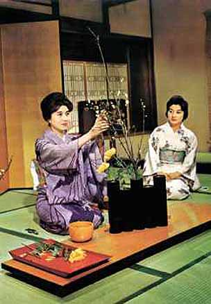

Ikebana
Ikebana:
(meaning - fresh flowers; the rebirth of flowers), the Japanese art of creating compositions from live or dried plants.
|
The purpose of ikebana is to create its own micro-world, emphasize the beauty and perfection of nature, bring harmony to the room where the composition stands, and influence the mood of people. In order to practice ikebana, one must have good taste (as the Japanese believe, "absolute vision", by analogy with absolute pitch), the ability to see beauty in the bends of branches, to hear the music of flowers. Ikebana masters study all their lives. The formation was influenced by Shinto beliefs and aesthetic and philosophical views of Buddhism. The art of ikebana originated from the Indian tradition of offering flowers to the gods and appeared in Japan in the 6th century. The first compositions were brought to the altar of Buddha in large luxurious vases and were distinguished by some pomp. |
 |
The constructive basis of the first ikebans was made up of two main branches, symbolizing light and darkness, the opposition of earth and sky. Then a third element was added, symbolizing a person. The different schools of ikebana reflect to varying degrees the influence of different schools of Buddhism as well as another traditional Japanese religion, Shinto.
There are several basic styles of ikebana:
- Rikka (standing flowers)
- Chabana (one flower ikebana)
- Nageire (flowers thrown into water)
- Seyka
Large compositions, in which the lines of plants rushed upwards, and the stems in no case should have touched the walls of the vessel. This style of ikebana dominated until the 15th century, laying the foundation for all ikebana styles.
Compositions characterized by extraordinary simplicity, which appeared in the 16th century. They only require 1-2 flowers and a leaf. Such compositions accompanied the tea ceremony. Chabana evolved from the nageire style popular with ordinary people.
Style that has no definite rules.
As a cross between nageire and rikka, the seiki style emerged in the early 18th century, combining the simplicity of nageire and the nobility of rikki.
After the Meiji Revolution, when Japan broke off its centuries of isolation, the art of ikebana became compulsory for female education in 1889.
- Moribana
Compositions of plants in flat vases, held with special tattoos. This style appears in 1897 and, interestingly, is considered by most Europeans to be typically Japanese.
In a Japanese house, ikebana is traditionally placed in a special niche - tokonome. Background and lighting are essential. Composition exhibitions are often held in rooms with tightly closed curtains under artificial light. Modern artisans use special lighting for ikebana.